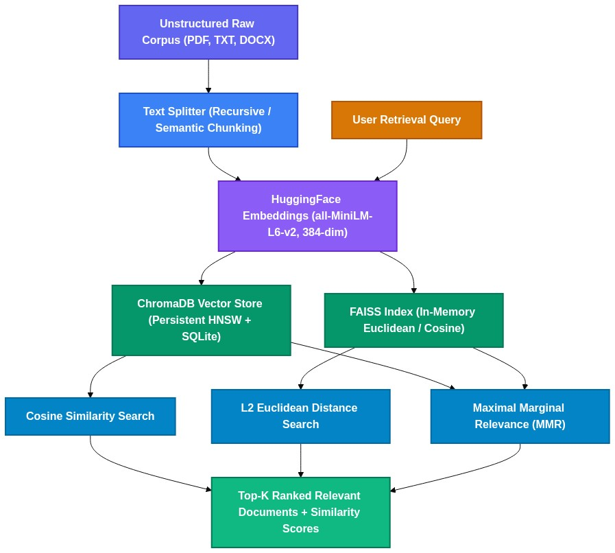

ChromaDB Vector Store & Enterprise Persistence Architecture¶
1. Overview and Core Motivation¶
ChromaDB is the AI-native, open-source embedding database designed for developer simplicity and enterprise persistence:
- Zero-Configuration Persistence: Out-of-the-box local storage backed by SQLite and ClickHouse/DuckDB mechanisms.
- HNSW Indexing: Uses Hierarchical Navigable Small World graphs for sub-millisecond approximate nearest neighbor lookups.
- Rich Metadata Querying: Multi-condition metadata filtering (
$and,$or,$eq,$in) directly at the vector query level. - Complete RAG Lifecycle: Seamlessly connects loaders, recursive splitters, HuggingFace embeddings, and Groq LLMs.
2. Architecture & Vector Storage Pipeline¶

3. Technology Stack¶
- Embeddings Model: HuggingFace
sentence-transformers/all-MiniLM-L6-v2(384-dimensional dense vectors). - Vector Store:
langchain_community.vectorstores.Chroma. - Language Model: Groq
openai/gpt-oss-120bviainit_chat_model('groq:openai/gpt-oss-120b').
In [1]:
## create sample documents
sample_docs = [
"""
Machine Learning Fundamentals
Machine learning is a subset of artificial intelligence that enables systems to learn
and improve from experience without being explicitly programmed. There are three main
types of machine learning: supervised learning, unsupervised learning, and reinforcement
learning. Supervised learning uses labeled data to train models, while unsupervised
learning finds patterns in unlabeled data. Reinforcement learning learns through
interaction with an environment using rewards and penalties.
""",
"""
Deep Learning and Neural Networks
Deep learning is a subset of machine learning based on artificial neural networks.
These networks are inspired by the human brain and consist of layers of interconnected
nodes. Deep learning has revolutionized fields like computer vision, natural language
processing, and speech recognition. Convolutional Neural Networks (CNNs) are particularly
effective for image processing, while Recurrent Neural Networks (RNNs) and Transformers
excel at sequential data processing.
""",
"""
Natural Language Processing (NLP)
NLP is a field of AI that focuses on the interaction between computers and human language.
Key tasks in NLP include text classification, named entity recognition, sentiment analysis,
machine translation, and question answering. Modern NLP heavily relies on transformer
architectures like BERT, GPT, and T5. These models use attention mechanisms to understand
context and relationships between words in text.
"""
]
In [2]:
import tempfile
temp_dir = tempfile.mkdtemp()
for i, doc in enumerate(sample_docs):
with open(f"{temp_dir}/doc_{i}.txt", "w") as f:
f.write(doc)
print(f"Sample doc created in : {temp_dir}")
Sample doc created in : C:\Users\itsar\AppData\Local\Temp\tmpw4xbizie
In [3]:
from langchain_community.document_loaders import TextLoader, DirectoryLoader
loader = DirectoryLoader(temp_dir, glob="*.txt", loader_cls=TextLoader, loader_kwargs={"encoding": "utf-8"}, show_progress=True)
documents = loader.load()
# print(f"Loaded {len(documents)} documents.")
# for i, doc in enumerate(documents):
# print(f"Document {i}: {doc.metadata['source']}")
# print(f"Content: {doc.page_content[:100]}...") # Print first 100 characters of content
[print(f"Document {i}: {doc.metadata['source']}\nContent: {doc.page_content[:100]}...") for i, doc in enumerate(documents)]
C:\Users\itsar\AppData\Local\Temp\ipykernel_16396\3358651609.py:1: DeprecationWarning: `langchain-community` is being sunset and is no longer actively maintained. See https://github.com/langchain-ai/langchain-community/issues/674 for details and migration guidance toward standalone integration packages. from langchain_community.document_loaders import TextLoader, DirectoryLoader
C:\RAG\Code\.venv\Lib\site-packages\tqdm\auto.py:21: TqdmWarning: IProgress not found. Please update jupyter and ipywidgets. See https://ipywidgets.readthedocs.io/en/stable/user_install.html from .autonotebook import tqdm as notebook_tqdm
0%| | 0/3 [00:00<?, ?it/s]
100%|██████████| 3/3 [00:00<00:00, 62.03it/s]
Document 0: C:\Users\itsar\AppData\Local\Temp\tmpw4xbizie\doc_0.txt Content: Machine Learning Fundamentals Machine learning is a subset of artificial intelligence that enables ... Document 1: C:\Users\itsar\AppData\Local\Temp\tmpw4xbizie\doc_1.txt Content: Deep Learning and Neural Networks Deep learning is a subset of machine learning based on artificial... Document 2: C:\Users\itsar\AppData\Local\Temp\tmpw4xbizie\doc_2.txt Content: Natural Language Processing (NLP) NLP is a field of AI that focuses on the interaction between comp...
Out[3]:
[None, None, None]
In [4]:
from langchain_text_splitters import RecursiveCharacterTextSplitter
splitter = RecursiveCharacterTextSplitter(
chunk_size=500,
chunk_overlap=50,
length_function=len,
separators=[" "]
)
chunks = splitter.split_documents(documents)
print(f"Created {len(chunks)} chunks from {len(documents)} documents.")
#show all chunks
for i, chunk in enumerate(chunks):
print(f"\nChunk {i+1}:")
print(f"Content: {chunk.page_content[:150]}...")
print(f"Metadata: {chunk.metadata}")
Created 5 chunks from 3 documents.
Chunk 1:
Content: Machine Learning Fundamentals
Machine learning is a subset of artificial intelligence that enables systems to learn
and improve from experience withou...
Metadata: {'source': 'C:\\Users\\itsar\\AppData\\Local\\Temp\\tmpw4xbizie\\doc_0.txt'}
Chunk 2:
Content: through
interaction with an environment using rewards and penalties....
Metadata: {'source': 'C:\\Users\\itsar\\AppData\\Local\\Temp\\tmpw4xbizie\\doc_0.txt'}
Chunk 3:
Content: Deep Learning and Neural Networks
Deep learning is a subset of machine learning based on artificial neural networks.
These networks are inspired by th...
Metadata: {'source': 'C:\\Users\\itsar\\AppData\\Local\\Temp\\tmpw4xbizie\\doc_1.txt'}
Chunk 4:
Content: (RNNs) and Transformers
excel at sequential data processing....
Metadata: {'source': 'C:\\Users\\itsar\\AppData\\Local\\Temp\\tmpw4xbizie\\doc_1.txt'}
Chunk 5:
Content: Natural Language Processing (NLP)
NLP is a field of AI that focuses on the interaction between computers and human language.
Key tasks in NLP include ...
Metadata: {'source': 'C:\\Users\\itsar\\AppData\\Local\\Temp\\tmpw4xbizie\\doc_2.txt'}
In [5]:
from langchain_community.embeddings import HuggingFaceEmbeddings
model = HuggingFaceEmbeddings(model_name="sentence-transformers/all-MiniLM-L6-v2")
texts = [chunk.page_content for chunk in chunks]
embeddings = model.embed_documents(texts)
print(embeddings)
sample_text = "MAchine LEarning is fascinating"
sample_embedding = model.embed_query(sample_text)
print(sample_embedding)
C:\Users\itsar\AppData\Local\Temp\ipykernel_16396\609930663.py:3: LangChainDeprecationWarning: The class `HuggingFaceEmbeddings` was deprecated in LangChain 0.2.2 and will be removed in 1.0. An updated version of the class exists in the `langchain-huggingface package and should be used instead. To use it run `pip install -U `langchain-huggingface` and import as `from `langchain_huggingface import HuggingFaceEmbeddings``. model = HuggingFaceEmbeddings(model_name="sentence-transformers/all-MiniLM-L6-v2")
Warning: You are sending unauthenticated requests to the HF Hub. Please set a HF_TOKEN to enable higher rate limits and faster downloads.
Loading weights: 0%| | 0/103 [00:00<?, ?it/s]
Loading weights: 100%|██████████| 103/103 [00:00<00:00, 9216.28it/s]
[[-0.008465679362416267, -0.060520950704813004, 0.05120517686009407, 0.005010051652789116, 0.04359254986047745, 0.016266705468297005, -0.026491954922676086, -0.061592746526002884, -0.051628854125738144, 0.019377656280994415, -0.06928836554288864, 0.006058155559003353, 0.02390773594379425, -0.006535536143928766, -0.018388163298368454, -0.012158285826444626, 0.024141181260347366, -0.01002019364386797, -0.027988826856017113, -0.06277546286582947, 0.05274488776922226, 0.0030766399577260017, -0.028633804991841316, 0.016889508813619614, -0.020897140726447105, 0.04697956144809723, 0.09413368999958038, 0.07418756932020187, 0.044498834758996964, -0.03806770592927933, 0.03434370458126068, -0.04133158177137375, 0.027708590030670166, 0.018666887655854225, -0.07913784682750702, -0.01922299526631832, -0.037820201367139816, 0.004585356451570988, 0.00011231646203668788, 0.008642072789371014, -0.016282949596643448, -0.05453399196267128, 0.010178552940487862, -0.03084421530365944, 0.20781174302101135, 0.09843826293945312, -0.10870938003063202, -0.10429389774799347, -0.04013156145811081, -0.04383330047130585, -0.039078276604413986, -0.044876616448163986, 0.008891656063497066, 0.032124318182468414, -0.03569512441754341, -0.014942681416869164, 0.04699808359146118, 0.07427982240915298, 0.005521850194782019, -0.028860867023468018, 0.026510043069720268, -0.09500008076429367, -0.01557482685893774, -0.037130966782569885, 0.03374091163277626, -0.006980855017900467, -0.04704238101840019, 0.01794055663049221, 0.031365737318992615, -0.037338268011808395, -0.018320461735129356, 0.049213070422410965, 0.006672087125480175, -0.007599803153425455, -0.01744661293923855, -0.01005304604768753, -0.03958345949649811, -0.0366085022687912, 0.04964391514658928, 0.018954897299408913, -0.013966081663966179, -0.032496217638254166, -0.054129086434841156, 0.10510366410017014, 0.029047764837741852, -0.07646907866001129, -0.046990230679512024, 0.05127688869833946, 0.0063103120774030685, 0.038879431784152985, -0.0047335089184343815, 0.0043792761862277985, -0.00658211437985301, -0.08251450210809708, -0.05276011303067207, 0.04822004958987236, -0.05453821271657944, -0.08527195453643799, -0.028840452432632446, 0.03923163190484047, -0.00850871205329895, 0.06956811994314194, 0.026127422228455544, 0.033808425068855286, 0.08272398263216019, 0.015651259571313858, 0.01484805066138506, 0.03174244239926338, 0.10844027251005173, -0.08771670609712601, -0.033969249576330185, 0.007110790349543095, -0.05139235779643059, -0.030148295685648918, -0.05915738269686699, -0.012903762049973011, 0.01514115184545517, -0.0175292007625103, 0.009819328784942627, 0.07771511375904083, -0.019128216430544853, -0.02755362167954445, 0.01614624261856079, 0.027859408408403397, -0.01714145392179489, -0.10750306397676468, -0.05122377723455429, 5.799507458635134e-33, -0.041724320501089096, -0.1358024775981903, 0.004605523310601711, -0.053377408534288406, 0.028693316504359245, -0.05368046835064888, -0.03339250385761261, -0.07511357963085175, 0.0592120960354805, 0.0021971857640892267, -0.01171700656414032, 0.06718369573354721, 0.0009222181397490203, 0.11504144221544266, 0.04827259108424187, 0.033605799078941345, 0.02550036832690239, 0.06177699565887451, -0.029263736680150032, -0.044084858149290085, 0.05090402811765671, 0.08067620545625687, 0.05506502836942673, -0.008181395009160042, 0.019014226272702217, 0.008901219815015793, 0.015370475128293037, 0.02268594689667225, 0.03391439840197563, -0.019785789772868156, 0.03368540480732918, 0.01830156520009041, -0.059494514018297195, 0.0203058160841465, 0.01748724654316902, 0.027961719781160355, -0.014734543859958649, -0.009319248609244823, 0.023984583094716072, -0.027152078226208687, -0.022381486371159554, -0.05183985084295273, 0.07420054078102112, -0.042574070394039154, -0.005748261697590351, 0.006532648112624884, 0.049203820526599884, -0.0969046875834465, -0.03927239403128624, -0.053957145661115646, -0.0038807436358183622, -0.03316881135106087, -0.0266681220382452, -0.07775554060935974, 0.028010254725813866, 0.09835120290517807, 0.0677826926112175, 0.0513823963701725, -0.08384165912866592, -0.019636869430541992, 0.039090897887945175, 0.0020811245776712894, 0.052355676889419556, 0.02149342931807041, -0.0009330231114290655, 0.05310557410120964, 0.007649288047105074, 0.05613468587398529, 0.04416213184595108, 0.07819940149784088, -0.02758272923529148, 0.07628549635410309, 0.04284687712788582, 0.006895385682582855, 0.07223428785800934, -0.06281169503927231, -0.015019545331597328, -0.03164708614349365, -0.025937754660844803, 0.06793581694364548, -0.013103840872645378, -0.04570012539625168, -0.04579140990972519, -0.032542917877435684, -0.019154144451022148, 0.003027578117325902, -0.053632814437150955, -0.03970494493842125, 0.021089645102620125, -0.04810766503214836, -0.11023440212011337, 0.011323017068207264, -0.031929049640893936, 0.07127237319946289, 0.0029000623617321253, -8.138827542137875e-33, -0.05101841688156128, 0.050355300307273865, 0.0005743850488215685, 0.06272409111261368, -0.016370149329304695, 0.04471273720264435, -0.10084592550992966, -0.01408282108604908, -0.05164621025323868, 0.0012238313211128116, -0.02691069059073925, 0.01947023719549179, 0.0716414824128151, 0.04546881839632988, -0.043575115501880646, 0.05385325103998184, -0.1194751188158989, -0.005334668792784214, -0.013165503740310669, 0.03161066398024559, -0.06544807553291321, 0.0742582306265831, 0.022886142134666443, 0.007629868574440479, 0.023709982633590698, -0.03354239836335182, -0.06125129014253616, 0.038613300770521164, 0.023492218926548958, 0.07180997729301453, -0.04557434469461441, -0.035027436912059784, -0.036554981023073196, -0.04581223800778389, -0.012722604908049107, 0.004071439150720835, 0.09371593594551086, -0.02928832732141018, -0.03857942298054695, 0.07026658952236176, 0.019688893109560013, -0.028020594269037247, -0.027502242475748062, -0.060483284294605255, -0.010489098727703094, -0.044650666415691376, -0.0849153995513916, -0.005033653695136309, 0.00916767306625843, -0.04841838404536247, -0.003631443716585636, 0.018127525225281715, -0.013863037340342999, -0.0645708292722702, -0.023369593545794487, -0.012043589726090431, -0.056517668068408966, -0.003696642117574811, 0.03297507390379906, 0.04955371096730232, -0.0631483942270279, -0.04395193234086037, 0.027925720438361168, 0.05454644933342934, -0.019976045936346054, -0.011621756479144096, -0.02467365190386772, 0.03955858200788498, -0.07902373373508453, -0.03696901351213455, 0.009558443911373615, 0.11474697291851044, -0.0036356463097035885, 0.05042249336838722, 0.00758433248847723, -0.04479603469371796, -0.05371483415365219, -0.05570703372359276, -0.036077626049518585, -0.052802398800849915, 0.10433825105428696, -0.06802394986152649, 0.041179973632097244, 0.04607268422842026, 0.0049100774340331554, 0.04191971197724342, 0.021074092015624046, -0.019554460421204567, -0.022842349484562874, -0.08625596761703491, -0.02653220109641552, 0.04642342031002045, -0.04331144317984581, 0.0973786786198616, -0.13766181468963623, -3.9202600277121746e-08, -0.030938396230340004, -0.04010336473584175, 0.07929471135139465, -0.07054141163825989, 0.04886224865913391, 0.05536450818181038, -0.07217548042535782, 0.09165939688682556, -0.024288585409522057, -0.027709228917956352, 0.038593921810388565, -0.02047223038971424, -0.03692326694726944, 0.012846162542700768, 0.05651681870222092, 0.06307955086231232, 0.08511576056480408, -0.007222400046885014, 0.04255715012550354, 0.02210964821279049, 0.0891052708029747, -0.044546931982040405, 0.03282187879085541, -0.049798499792814255, 0.08294083923101425, -0.08426029235124588, -0.026979614049196243, 0.07799612730741501, -0.041801754385232925, 0.09441418200731277, -0.01239585131406784, 0.012262183241546154, 0.050739482045173645, 0.021762225776910782, 0.10080724209547043, 0.09739901125431061, 0.06755426526069641, -0.13723087310791016, -0.043691642582416534, -0.018527906388044357, -0.023403707891702652, 0.12512178719043732, -0.09502583742141724, -0.031044935807585716, 0.03269113972783089, 0.023239770904183388, 0.033654775470495224, -0.09151148796081543, -0.03450788930058479, 0.016412867233157158, 0.032363031059503555, -0.017138779163360596, 0.0465303510427475, 0.04621098190546036, 0.0804603323340416, 0.026223013177514076, 0.056062001734972, -0.09993427991867065, 0.08437436074018478, 0.0653809905052185, -0.013901224359869957, 0.03103523515164852, 0.06561033427715302, 0.019027478992938995], [0.015729466453194618, 0.07593894749879837, -0.03337239474058151, -0.03598460182547569, 0.0284095648676157, 0.040836360305547714, 0.06900295615196228, 0.036173585802316666, 0.009185642935335636, 0.06985016167163849, 0.019507428631186485, -0.13405276834964752, 0.025166215375065804, 0.06380955129861832, 0.059187501668930054, -0.04220215603709221, 0.04832267388701439, 0.03545460104942322, -0.052742086350917816, -0.03334444388747215, 0.038674890995025635, -0.04781327396631241, 0.03569824993610382, -0.010283034294843674, -0.07508500665426254, -0.04040270671248436, -0.019442368298768997, 0.02716919034719467, 0.0894438698887825, -0.07015755772590637, 0.009063619188964367, 0.03301096335053444, 0.07820156216621399, -0.018916325643658638, -0.1126786470413208, 0.08095810562372208, 0.0034994271118193865, -0.061807502061128616, -0.06350981444120407, -0.037565797567367554, -0.042407359927892685, -0.03146480396389961, -0.0356106199324131, -0.013929244130849838, 0.026856835931539536, -0.06424976885318756, 0.009811991825699806, 0.03477921709418297, -0.008194789290428162, -0.07947688549757004, -0.024154094979166985, 0.0032754475250840187, -0.019680745899677277, 0.01622985489666462, -0.024224018678069115, -0.01785130426287651, 0.021719446405768394, 0.02523038536310196, 0.0032050940208137035, -0.05225461721420288, 0.05059562250971794, -0.0673179030418396, -0.0933803990483284, 0.06356417387723923, 0.01082646194845438, 0.004052009899169207, -0.0658467561006546, 0.046267107129096985, 0.052789077162742615, -0.08753815293312073, -0.02037029340863228, -0.10683020204305649, -0.004803478252142668, -0.15221337974071503, 0.05856987088918686, 0.02607102505862713, -0.09860996901988983, -0.044190626591444016, 0.04437616840004921, -0.028369080275297165, 0.02723291702568531, -0.05155394598841667, -0.05850246176123619, 0.029783979058265686, 0.027854207903146744, -0.0025170522276312113, 0.0442868173122406, 0.029940396547317505, 0.12075502425432205, 0.06388480216264725, 0.020502954721450806, -0.004694846924394369, 0.000442811637185514, -0.05686848983168602, -0.06380680203437805, 0.025323325768113136, -0.024995794519782066, -0.07336078584194183, 0.022609258070588112, 0.09041197597980499, 0.028432697057724, 0.01095667015761137, -0.032127171754837036, 0.016180330887436867, 0.00554754538461566, -0.02835460752248764, 0.004139523487538099, 0.015072996728122234, 0.05114918202161789, 0.010185363702476025, -0.10458488017320633, -0.02540268748998642, 0.031886909157037735, 0.022997962310910225, -0.029364673420786858, 0.11344680190086365, -0.005762863904237747, -0.014172542840242386, 0.062448203563690186, 0.050538673996925354, 0.10621640086174011, -0.04611663892865181, 0.05509194731712341, -0.021756062284111977, -0.027032049372792244, 0.026263924315571785, -0.004185791593044996, -4.713761366814159e-33, 0.03766212984919548, -0.03865703567862511, -0.01352759450674057, -7.883390935603529e-05, 0.0025093620643019676, -0.0015376722440123558, 0.0024296625051647425, 0.02275904268026352, -0.005957435350865126, -0.017204856500029564, -0.013803482986986637, 0.03473735973238945, 0.02495456486940384, 0.0742638111114502, 0.14631293714046478, -0.03178074210882187, -0.06922001391649246, 0.07844682037830353, 0.013789858669042587, 0.0034138357732445, 0.024621019139885902, -0.07261690497398376, 0.015499996021389961, 0.019603366032242775, 0.07012465596199036, 0.03375912830233574, 0.032051581889390945, -0.03934425115585327, 0.03561735898256302, 0.0009751398465596139, 0.08515724539756775, 0.038636624813079834, -0.03868219628930092, 0.022320793941617012, -0.009726232849061489, 0.1279439777135849, 0.0036916094832122326, -0.03854381665587425, 0.05185564607381821, -0.003363104769960046, -0.10139669477939606, -0.05772480368614197, 0.027243323624134064, 0.020785363391041756, 0.0180763341486454, -0.011060060001909733, 0.13322404026985168, -0.030802292749285698, -0.08143825083971024, 0.05660818889737129, -0.029423581436276436, 0.04436756297945976, 0.0009734863415360451, -0.029524901881814003, -0.03394925966858864, 0.03044048883020878, 0.06136825308203697, -0.013715635985136032, -0.02557077445089817, 0.04412992298603058, 0.03515710309147835, 0.02365362085402012, -0.025574492290616035, 0.04219910129904747, 0.003716021543368697, 0.024551814422011375, -0.045071057975292206, 0.006090773735195398, -0.0006338157108984888, -0.0012861891882494092, -0.07230724394321442, 0.04359706863760948, -0.010884096845984459, -0.082430899143219, -0.04911137372255325, -0.018153132870793343, -0.02930906042456627, -0.08712772279977798, -0.00693455059081316, -0.013480915687978268, -0.09243888407945633, -0.005558090750128031, -0.049827124923467636, 0.021236779168248177, 0.022338056936860085, -0.02909698709845543, -0.008563907817006111, -0.05469220504164696, -0.00512579083442688, -0.001372508704662323, -0.06710290163755417, 0.03162097930908203, 0.023494476452469826, 0.05728023499250412, 0.0533723346889019, 3.0817542339584355e-33, -0.02333979122340679, -0.015382707118988037, -0.0356195904314518, 0.025092680007219315, 0.04519366845488548, 0.029262728989124298, -0.026215625926852226, -0.047786615788936615, 0.03136433660984039, 0.03838895261287689, -0.15382438898086548, 0.08159636706113815, 0.05433313921093941, 0.11275658011436462, 0.010772116482257843, -0.11280710995197296, 0.01221515517681837, 0.03848419338464737, -0.009488208219408989, 0.004615302663296461, 0.06415856629610062, 0.0907106101512909, -0.09531684219837189, -0.022942224517464638, -0.064958855509758, 0.025625254958868027, 0.04892352223396301, -0.0391710102558136, -0.01525608915835619, 0.04771927371621132, -0.024657420814037323, 0.0028905777726322412, -0.09583590179681778, 0.03543831780552864, -0.054060958325862885, 0.027919594198465347, 0.04799514636397362, -0.03771679848432541, -0.0882381722331047, 0.018090175464749336, 0.03096138872206211, -0.016631033271551132, -0.06996390968561172, 0.01832016557455063, 0.0009467217023484409, 0.02941383793950081, -0.1022450253367424, -0.06810981035232544, -0.059887226670980453, -0.029335368424654007, 0.045068930834531784, -0.006045933347195387, -0.06369999051094055, -0.02290741540491581, -0.04199621081352234, 0.007481182925403118, 0.06447221338748932, -0.0037647958379238844, 0.026808351278305054, 0.0032277721911668777, 0.01842574030160904, -0.04172196611762047, -0.027171829715371132, 0.12636397778987885, -0.022356629371643066, 0.051954805850982666, -0.020386692136526108, 0.027624337002635002, -0.016655972227454185, 0.02547857165336609, 0.014724431559443474, 0.1138109341263771, 0.03912283107638359, -0.047000184655189514, 0.02065899968147278, -0.047105204313993454, -0.10622654855251312, -0.009252266027033329, 0.0019310794305056334, -0.054078660905361176, -0.03001048043370247, 0.03903816640377045, 0.1409875899553299, -0.029876532033085823, -0.11688446998596191, 0.0009262730600312352, -0.032163217663764954, 0.00893554650247097, 0.017089229077100754, -0.0054344055242836475, -0.06828950345516205, 0.03437037020921707, 0.07233775407075882, -0.017180483788251877, -0.030595172196626663, -1.782436243047414e-08, -0.0297464020550251, -0.01752813719213009, 0.07532534748315811, 0.05277306213974953, -0.010482440702617168, 0.10108456015586853, 0.011526329442858696, 0.0455438569188118, -0.0148624824360013, 0.03303243964910507, 0.0281896460801363, -0.019414233043789864, 0.06179053336381912, 0.03217814117670059, 0.12193363904953003, 0.04812168702483177, 0.03379395231604576, 0.057992879301309586, -0.09121973067522049, 0.0334613062441349, 0.06391748040914536, 0.025649400427937508, 0.0004115467600058764, 0.018275002017617226, -0.016684221103787422, -0.016523895785212517, -0.0009658432682044804, 0.1044149324297905, 0.031950753182172775, 0.07003531605005264, 0.04086418077349663, -0.011376531794667244, 0.012696323916316032, -0.002727012149989605, -0.03641636669635773, 0.01567867211997509, -0.0607842281460762, -0.06705482304096222, -0.014769009314477444, 0.037407975643873215, -0.09451436251401901, -0.0038964753039181232, -0.06580942124128342, -0.01889726333320141, 0.07620195299386978, 0.04033835604786873, -0.12376028299331665, -0.05836908146739006, -0.02259090356528759, 0.026898426935076714, -0.0119596803560853, -0.07085338979959488, -0.04838646575808525, 0.05685172230005264, 0.05448456481099129, -0.025809278711676598, 0.03178195282816887, -0.07212499529123306, -0.02103160321712494, 0.06576702743768692, 0.02841201052069664, 0.03727903217077255, 0.02195891924202442, -0.0074999285861849785], [-0.10455694794654846, -0.051919158548116684, 0.06341466307640076, -0.05730394273996353, -0.039675530046224594, 0.024999385699629784, -0.052670665085315704, -0.029122373089194298, 0.02115858718752861, -0.08161646127700806, -0.06754813343286514, 0.03383979573845863, -0.020935432985424995, 0.042895570397377014, -0.0811578631401062, -0.032231979072093964, -0.017449580132961273, 0.061727024614810944, -0.10074803978204727, -0.06742610037326813, 0.025922562927007675, 0.03846803680062294, -0.05629614740610123, -0.03551437333226204, 0.06266326457262039, 0.07492750138044357, 0.014417452737689018, -0.04910003021359444, 0.035017311573028564, -0.015935590490698814, 0.056106556206941605, -0.05432215332984924, 0.002539930399507284, 0.06794925779104233, -0.09349905699491501, 0.08241986483335495, -0.05699818208813667, -0.0004535126208793372, 0.013658931478857994, -0.03755202144384384, -0.025963392108678818, -0.01104890089482069, 0.009304122999310493, 0.00014815230679232627, 0.13780750334262848, 0.06280050426721573, 0.005192652810364962, -0.017994096502661705, 0.008161257021129131, 0.03968805447220802, -0.050358034670352936, 0.005335201974958181, -0.00590688968077302, 0.1142357587814331, 0.005153154022991657, 0.028989000245928764, 0.02327040210366249, 0.012354413978755474, -0.024540424346923828, 0.019864195957779884, 0.07797785848379135, -0.031676825135946274, 0.02306252159178257, 0.027986593544483185, -0.015160514041781425, 0.01477167010307312, -0.010375919751822948, 0.033283572643995285, 0.05248976871371269, -0.09422141313552856, 0.0742783471941948, 0.11132099479436874, -0.007685679476708174, 0.014712946489453316, -0.02381729893386364, -0.01045138668268919, 0.05582442507147789, -0.07389122992753983, 0.0554240420460701, -0.021219396963715553, 0.08756830543279648, 0.019598964601755142, 0.01467971596866846, -0.02267328090965748, 0.14144594967365265, -0.04579539597034454, -0.07295498996973038, 0.015572738833725452, -0.13217271864414215, -0.01334315910935402, -0.04420541599392891, -0.07516448199748993, -0.025657307356595993, -0.08830133080482483, -0.007748664356768131, 0.015019158832728863, -0.008297895081341267, -0.0647520124912262, -0.05377092584967613, 0.025269296020269394, -0.03570360317826271, -0.02852597087621689, 0.01637970469892025, 0.009881011210381985, 0.043264005333185196, -0.008585281670093536, 0.06965271383523941, 0.027226587757468224, 0.03829733654856682, -0.061888497322797775, 0.03009266033768654, 0.012221680022776127, 0.0037046698853373528, -0.0061422232538461685, 0.04336191341280937, -0.07685285061597824, 0.00024876531097106636, -0.00561592448502779, 0.0174641702324152, 0.03580585867166519, -0.07968717813491821, 0.004123718943446875, -0.046167727559804916, 0.01585846021771431, 0.003299640491604805, -0.03697393089532852, -0.022093256935477257, 6.526580469319474e-33, -0.06960473209619522, -0.06728721410036087, 0.022174805402755737, 0.01584143005311489, 0.04811486601829529, -0.03947615996003151, -0.04563398286700249, 0.008702455088496208, -0.018518388271331787, -0.017122972756624222, -0.11370091885328293, 0.016401659697294235, -0.04920782521367073, 0.15405462682247162, -0.005100281909108162, -0.018806299194693565, 0.007340570446103811, -0.01688874326646328, 0.021656936034560204, -0.07459711283445358, -0.002781799528747797, 0.012970653362572193, 0.015267852693796158, 0.0356253981590271, -0.040468133985996246, 0.005647835321724415, 0.027894077822566032, -0.0037862774915993214, 0.02356165461242199, -0.029195619747042656, -0.002104549901559949, 0.05021913722157478, -0.022035500034689903, 0.002461740281432867, -0.019718308001756668, -0.019455652683973312, -0.015215451829135418, 0.032834552228450775, 0.037486277520656586, -0.007191531825810671, 0.015054656192660332, 0.04750090837478638, -0.04980585351586342, -0.0017505012219771743, -0.00849995668977499, 0.012567274272441864, 0.032136522233486176, -0.04705966264009476, -0.003763627726584673, -0.0504608228802681, 0.04018846154212952, 0.006880934815853834, -0.11639755219221115, -0.06237826496362686, 0.11259787529706955, 0.014920750632882118, 0.057864222675561905, 0.07341977953910828, 0.020947178825736046, 0.03167792037129402, 0.05813341587781906, 0.008147213608026505, -0.044808294624090195, 0.02938687801361084, 0.021529609337449074, 0.013678309507668018, 0.08509708195924759, 0.02186661958694458, 0.031149430200457573, -0.02297230251133442, -0.014414763078093529, 0.03505353257060051, 0.05430202931165695, -0.0334637276828289, -0.03035431168973446, 0.04946931079030037, 0.008476377464830875, -0.0676354244351387, -0.04831649363040924, 0.1464434117078781, -0.019990811124444008, 0.03395717963576317, -0.010472984053194523, 0.00463164784014225, -0.028499159961938858, 0.06152015179395676, -0.002922069514170289, -0.036339111626148224, 0.05781427025794983, -0.007945172488689423, -0.05716021731495857, 0.019824307411909103, 0.02430446818470955, 0.017207106575369835, -0.010052533820271492, -5.675459376502781e-33, -0.06622687727212906, 0.14093589782714844, -0.06000739708542824, 0.11347443610429764, 0.031412962824106216, -0.03534051030874252, -0.07126778364181519, -0.01755019836127758, -0.03345603868365288, 0.04933607950806618, 0.03149913251399994, -0.013919319957494736, 0.026883626356720924, -0.006404236424714327, 0.040687017142772675, -0.06282807141542435, -0.014132478274405003, -0.08780136704444885, -0.02984965778887272, -0.022112134844064713, -0.01790120080113411, 0.10735984146595001, -0.044920843094587326, -0.03478556498885155, -0.05703127011656761, -0.0121869882568717, -0.12709638476371765, 0.024110058322548866, 0.017451340332627296, 0.025876635685563087, -0.00917179323732853, -0.034268759191036224, -0.027636563405394554, -0.0027910894714295864, 0.014780429191887379, 0.06670285761356354, -0.00013593527546618134, -0.04845907911658287, -0.025547174736857414, -0.05980439856648445, 0.11620630323886871, 0.0029190494678914547, 0.011929147876799107, -0.005260072648525238, -0.048530980944633484, -0.08419816941022873, -0.031023159623146057, 0.00754314661026001, -0.00172638229560107, 0.03847111761569977, 0.01857241429388523, -0.0098803099244833, -0.07103972882032394, -0.04880240932106972, 0.02238873951137066, -0.0012603412615135312, -0.0056887962855398655, -0.020039157941937447, 0.0932820588350296, 0.03276578709483147, -0.05261213704943657, -0.10803280770778656, 0.005687187425792217, -0.02608427219092846, -0.018540022894740105, 0.06811197847127914, -0.08160369098186493, 0.0732390508055687, -0.033393796533346176, 0.007543609011918306, 0.055149465799331665, 0.017052803188562393, 0.06063634157180786, 0.08290620148181915, -0.0645940899848938, -0.11287640035152435, -0.017831481993198395, -0.013369794003665447, -0.0009992942214012146, -0.029953455552458763, 0.04062870517373085, -0.07281295210123062, -0.0782904177904129, 0.07535183429718018, 0.04632578790187836, 0.12317986786365509, -0.041758179664611816, -0.05246758460998535, 0.06835801154375076, 0.01725146360695362, -0.0009311430621892214, 0.04656429961323738, -0.035175636410713196, 0.0012491162633523345, -0.0435684397816658, -3.634697876009341e-08, -0.027973376214504242, -0.0019474521977826953, 0.09059759974479675, -0.05787856504321098, 0.0631878525018692, -0.09595195204019547, 0.0716853141784668, 0.13172467052936554, -0.015754779800772667, -0.023481229320168495, 0.11234492063522339, -0.022159626707434654, -0.06500490009784698, -0.07506080716848373, 0.03123878501355648, 0.07976064085960388, 0.042549341917037964, -0.008889502845704556, 0.06736484169960022, -0.024798832833766937, 0.06190282851457596, 0.030411018058657646, -0.0486970990896225, 0.05088881030678749, 0.010943783447146416, -0.04104125499725342, -0.042356375604867935, 0.03906825929880142, -0.06089986115694046, 0.014693212695419788, 0.00724400207400322, 0.049395233392715454, 0.03987714275717735, -0.030536461621522903, 0.024385206401348114, 0.04089753329753876, 0.05430407077074051, -0.010781179182231426, -0.042443450540304184, -0.05733993649482727, 0.011365110985934734, 0.053269803524017334, -0.004635075107216835, -0.005753922276198864, -0.10548320412635803, 0.0033231270499527454, 0.0716179683804512, -0.07918418943881989, 0.03549312427639961, 0.026626380160450935, 0.006364851258695126, -0.005311432760208845, 0.08397302776575089, 0.06808619946241379, 0.018601752817630768, -0.01523326151072979, 0.0331944078207016, -0.10581792145967484, 0.014730727300047874, 0.0945810005068779, -0.06969244033098221, 0.05854107066988945, 0.047894660383462906, -0.025698473677039146], [-0.17065300047397614, -0.03127960488200188, -0.01712183840572834, -0.010041370056569576, -0.11242444068193436, 0.04405425116419792, -0.1353420615196228, 0.01968616060912609, 0.04436749219894409, -0.03156150504946709, -0.08149439096450806, 0.07244377583265305, -0.012425338849425316, 0.0013824489433318377, -0.046284496784210205, 0.025146348401904106, -0.010566791519522667, 0.06777005642652512, -0.013788534328341484, -0.060048870742321014, 0.019834531471133232, 0.06095287203788757, -0.0342925563454628, -0.040437962859869, 0.1167343482375145, 0.04070403799414635, 0.003443359164521098, -0.017907388508319855, 0.09288079291582108, -0.0002624331973493099, 0.02857852168381214, -0.0046197520568966866, -0.01371735893189907, 0.07934816181659698, -0.09609796106815338, 0.02651076950132847, -0.06985344737768173, -0.021173056215047836, 0.011615047231316566, 0.023844551295042038, 0.046489417552948, 0.04713308438658714, 0.004994400776922703, -0.01428132876753807, 0.03853248432278633, -0.021837087348103523, 0.030366212129592896, 0.015299604274332523, -0.005393766798079014, 0.033208735287189484, -0.04814460873603821, 0.021978022530674934, -0.009363958612084389, 0.12009395658969879, 0.006551569793373346, 0.03594367951154709, 0.015483269467949867, -0.07463489472866058, 0.039772070944309235, 0.005472855176776648, -0.048270925879478455, -0.023425687104463577, -0.013402399607002735, 0.010466727428138256, -0.04231298714876175, 0.03382917866110802, 0.0024839346297085285, 0.08292251080274582, 0.02377120964229107, -0.005522566381841898, -0.07541104406118393, 0.048493657261133194, -0.049307260662317276, 0.03232647106051445, 0.005491812247782946, -0.014410482719540596, 0.007598920725286007, -0.12334877997636795, -0.017823366448283195, -0.04013865441083908, 0.02150988206267357, -0.02783999964594841, -0.008309726603329182, 0.0651213750243187, 0.013099536299705505, -0.07513608038425446, -0.007484228815883398, 0.06226256862282753, -0.04511331021785736, -0.010818153619766235, 0.0035627237521111965, 0.04241828992962837, 0.04455140605568886, 0.008422770537436008, -0.0729956328868866, 0.06072818487882614, 0.020790930837392807, 0.01815263368189335, 0.088584303855896, -0.018709376454353333, -3.906486017513089e-05, 0.001435676240362227, 0.07142410427331924, 0.014517470262944698, -0.06190646067261696, -0.09460151195526123, 0.039144840091466904, 0.013769282959401608, -0.05153593048453331, -0.05018189176917076, 0.0343981496989727, -0.004925771616399288, 0.011576645076274872, -0.08285743743181229, 0.004046375397592783, -0.03572046011686325, -0.04550482705235481, -0.0384279303252697, -0.031172629445791245, 0.05125466734170914, -0.041468121111392975, 0.01334011647850275, -0.043810952454805374, 0.1075645461678505, 0.03663476184010506, 0.0006423157756216824, -0.016230881214141846, -1.685664592879922e-33, -0.08934137970209122, -0.029325436800718307, 0.021211883053183556, 0.02314419485628605, 0.022285357117652893, 0.01518147811293602, 0.020042816177010536, -0.047719936817884445, -0.0063486890867352486, 0.04033982381224632, -0.10952524095773697, 0.15665960311889648, -0.06468505412340164, 0.019604332745075226, -0.04189319908618927, -0.03567228838801384, 0.05068282037973404, 0.04665015637874603, -0.04189781844615936, 0.022563442587852478, 0.07112877815961838, -0.03648008406162262, 0.025861918926239014, 0.006489196326583624, -0.02273031510412693, -0.00036011345218867064, 0.06137380748987198, -0.007790459785610437, 0.04325786978006363, -0.005684084724634886, -0.026377489790320396, 0.028174331411719322, -0.09082094579935074, -0.0037437446881085634, 0.052082791924476624, -0.018207494169473648, 0.02266307920217514, -0.03150685131549835, 0.017222872003912926, -0.016226472333073616, 0.018285030499100685, 0.08559505641460419, -0.06433167308568954, 0.015153119340538979, -0.04667869955301285, -0.0232145544141531, 0.061853062361478806, 0.0344686396420002, 0.09003324806690216, -0.02754461206495762, 0.0502033457159996, -0.018758829683065414, -0.05139697343111038, -0.06077789515256882, 0.08987487107515335, -0.01270062942057848, -0.00368982320651412, 0.02458067052066326, 0.04231768846511841, 0.12827883660793304, -0.06565936654806137, -0.000700281816534698, -0.04141795262694359, 0.014143443666398525, -0.0071305385790765285, -0.026247205212712288, 0.026184983551502228, -0.034350842237472534, 0.0650230273604393, -0.05765996873378754, 0.0037636898923665285, -0.013971523381769657, 0.030628621578216553, -0.010925044305622578, 0.07073687016963959, 0.006991068832576275, 0.02389644645154476, -0.014475446194410324, -0.06349942833185196, -0.019521402195096016, -0.04817281290888786, 0.02784980647265911, -0.025536231696605682, 0.03044774942100048, -0.0071389093063771725, -0.0009847760666161776, 0.02374691143631935, -0.016168631613254547, -0.11297262459993362, -0.026664888486266136, -0.032467685639858246, 0.01655694656074047, -0.012670752592384815, 0.032245684415102005, -0.03579997643828392, 7.877112541134923e-34, -0.029868371784687042, 0.025417311117053032, -0.08368568867444992, 0.11599015444517136, 0.025406042113900185, -0.024351060390472412, -0.016159571707248688, -0.053193964064121246, 0.06339512020349503, -0.001703927293419838, -0.04728743061423302, -0.07081421464681625, 0.03454884514212608, -0.037856023758649826, 0.05343828350305557, -0.05368119850754738, 0.03579089790582657, -0.05276542901992798, -0.04441266134381294, -0.04915005341172218, -0.03242925927042961, 0.12189819663763046, -0.09535984694957733, -0.03670480474829674, -0.05830772593617439, 0.04794912785291672, -0.07136975228786469, 0.08046437054872513, 0.021420927718281746, 0.007986309006810188, -0.03946609050035477, -0.07974037528038025, 0.025353020057082176, 0.007059148978441954, -0.029240461066365242, 0.005946620833128691, 0.09035619348287582, 0.012742790393531322, 0.018519964069128036, -0.03137809410691261, 0.08978043496608734, -0.03367944806814194, -0.05278848856687546, 0.047974977642297745, 0.02973068691790104, -0.009322591125965118, -0.031313348561525345, 0.02539965882897377, -0.01754838414490223, 0.025040404871106148, -0.03692694380879402, 0.08775795996189117, -0.04534680396318436, -0.03285780921578407, 0.038681019097566605, -0.01902187056839466, 0.009573759511113167, -0.06102733686566353, 0.056847766041755676, 0.002464327495545149, -0.020089272409677505, -0.05787958577275276, 0.08539978414773941, -0.06598709523677826, -0.00590404961258173, 0.0905732810497284, 0.010615224950015545, -0.09273845702409744, 0.0393732488155365, 0.02920936793088913, 0.06791801005601883, 0.05472160875797272, 0.05262470245361328, -0.030178049579262733, 0.00760697852820158, -0.049621228128671646, -0.06104022264480591, -0.057507626712322235, -0.028367461636662483, 0.01088328193873167, -0.12848541140556335, 0.017965849488973618, 0.03126265108585358, 0.05699587240815163, 0.001036331057548523, 0.08304359763860703, 0.11210526525974274, -0.06871817260980606, 0.02639385685324669, 0.019830575212836266, -0.017798013985157013, 0.023484596982598305, -0.004710681736469269, 0.009556222707033157, -0.059971123933792114, -1.5596743452306328e-08, -0.010018267668783665, 0.02316550724208355, 0.04080208018422127, 0.008055963553488255, 0.08504252135753632, -0.024545593187212944, -0.01897129788994789, 0.10146808624267578, 0.011570808477699757, 0.004317654296755791, 0.12121528387069702, -0.057056672871112823, -0.02900722436606884, -0.06264322996139526, 0.11563267558813095, 0.060951486229896545, 0.10529216378927231, -0.07372231036424637, -0.04733879491686821, -0.04365958273410797, -0.013463100418448448, 0.1342172622680664, -0.06833815574645996, -0.00419623451307416, 0.049294956028461456, 0.004448576830327511, -0.01681806705892086, 0.014043178409337997, 0.07076472789049149, -0.01619785465300083, 0.045536596328020096, -0.004424112383276224, 0.06832809001207352, -0.03838115930557251, -0.010310981422662735, -0.026146914809942245, 0.13368643820285797, -0.00021413406648207456, -0.0005398031789809465, -0.05449527129530907, 0.005477187689393759, -0.009061146527528763, -0.11080721020698547, 0.04148425906896591, 0.003914317581802607, -0.021286070346832275, -0.003535112366080284, -0.09444638341665268, 0.01824796199798584, 0.01934066414833069, 0.06729517877101898, -0.07019078731536865, -0.02050870843231678, 0.056681618094444275, 0.05545193329453468, -0.006354058161377907, -0.01528146956115961, -0.12036983668804169, 0.012699867598712444, 0.06734231114387512, -0.03437373787164688, 0.015988167375326157, -0.04828561097383499, 0.0076337577775120735], [-0.0669747069478035, -0.002277464373037219, 0.05130118131637573, -0.004359842278063297, 0.05914006382226944, -0.003149365307763219, 0.046301644295454025, 0.04743415489792824, 0.03180835396051407, 0.008453961461782455, -0.05642027035355568, 0.013041173107922077, -0.029635315760970116, 0.026270925998687744, 0.028436236083507538, 0.0771963819861412, 0.029922468587756157, -0.027070872485637665, -0.10356622189283371, -0.07577343285083771, 0.03573380038142204, 0.09194459021091461, -0.04354754462838173, -0.03671332821249962, 0.003863394493237138, 0.07164530456066132, -0.004089775495231152, -0.07310816645622253, 0.034576207399368286, 0.05640001222491264, 0.04736104607582092, -0.018617719411849976, 0.024938033893704414, 0.13578158617019653, -0.09972898662090302, 0.09796012192964554, -0.04574242979288101, -0.017788605764508247, -0.005721707362681627, -0.05214359611272812, -0.04140368476510048, -0.06316124647855759, -0.0674305111169815, 0.021437080577015877, 0.16509653627872467, -0.004345241468399763, -0.08560915291309357, 0.04045148566365242, -0.03076876699924469, 0.004407512955367565, -0.12247311323881149, -0.01387585699558258, 0.026732996106147766, 0.08174704760313034, -0.07685781270265579, 0.09152644872665405, 0.002691488480195403, -0.048484645783901215, 0.02922094613313675, -0.10502715408802032, -0.003901457879692316, -0.03114444762468338, 0.015095178969204426, 0.01594339683651924, 0.003313634777441621, 0.019368955865502357, -0.04634956642985344, -0.01913268119096756, 0.001084820949472487, -0.049498267471790314, -0.010208598338067532, 0.10463360697031021, 0.0463237464427948, 0.03981320187449455, -0.04029995948076248, -0.03688735142350197, 0.018241586163640022, -0.07761749625205994, 0.07392463088035583, -0.02076394483447075, 0.03406602516770363, 0.03306686505675316, 0.08831441402435303, 0.046908602118492126, 0.08103115111589432, -0.040967799723148346, 0.02169588766992092, 0.029897892847657204, -0.06240050867199898, 0.007231363095343113, -0.047797441482543945, -0.1680818349123001, 0.06592271476984024, -0.03106500208377838, 0.002768852049484849, 0.03885955736041069, -0.0673590674996376, -0.11144734174013138, -0.011315484531223774, 0.017429346218705177, 0.016642989590764046, 0.0477866530418396, 0.003303266828879714, -0.041947659105062485, -0.08318115025758743, 0.020957758650183678, -0.03606507182121277, -0.03341170400381088, 0.0188430268317461, -0.09674489498138428, -0.03504141792654991, 0.007108025252819061, -0.012765687890350819, -0.03803279623389244, 0.06312739104032516, -0.06679310649633408, -0.0011590711073949933, 0.018903128802776337, 0.06148728355765343, 0.06084496155381203, -0.08822163939476013, 0.06837489455938339, -0.035715170204639435, 0.05210067331790924, -0.012542052194476128, -0.032448235899209976, 0.0500277504324913, 1.8309154706942396e-33, -0.021467924118041992, -0.026547377929091454, -0.0004217494570184499, -0.015626458451151848, 0.031497202813625336, -0.01706787385046482, -0.02807438373565674, 0.0001772394316503778, -0.05251762270927429, -0.03901033475995064, 0.003903251141309738, -0.010279664769768715, -0.013560784049332142, 0.021336207166314125, 0.026894591748714447, 0.021907340735197067, -0.08507732301950455, 0.09282024204730988, 0.024418115615844727, -0.01989935152232647, -0.03955269604921341, 0.0695871114730835, 0.04270194098353386, 0.026333332061767578, -0.047136519104242325, 0.04223216325044632, -0.011758805252611637, -0.08711531013250351, 0.01969727873802185, -0.0038616585079580545, -0.04480745643377304, 0.07195925712585449, -0.07507077604532242, 0.006725713610649109, 0.01741802878677845, -0.03008435294032097, 0.008094224147498608, -0.008060548454523087, 0.012560524977743626, -0.01862538792192936, -0.05950883403420448, 0.06461716443300247, 0.01034583430737257, 0.03997458517551422, -0.0014937332598492503, 0.0385911762714386, -0.011075092479586601, -0.0051506031304597855, 0.05181529372930527, -0.00011192455713171512, 0.06405310332775116, 0.0002799915964715183, -0.06126532331109047, 0.00743380282074213, 0.09122033417224884, 0.026077810674905777, 0.020966464653611183, 0.019897496327757835, 0.024788586422801018, 0.02319554053246975, 0.06837916374206543, -0.006809141952544451, 0.017412181943655014, 0.021078171208500862, 0.05351857841014862, 0.01910526305437088, 0.023777799680829048, 0.03918173164129257, 0.05990403890609741, 0.024267781525850296, -0.021290495991706848, 0.03890583664178848, 0.01912272535264492, 0.06870320439338684, 0.03514256328344345, 0.022466661408543587, 0.04016796872019768, -0.07822591811418533, -0.014505498111248016, 0.09643659740686417, -0.05272027105093002, -0.12787380814552307, 0.012838459573686123, -0.07065773010253906, -0.042912807315588, -0.04366738721728325, -0.03136593475937843, -0.02388179302215576, 0.04215959832072258, -0.02390202134847641, -0.0309552364051342, 0.05490248277783394, -0.06091545522212982, 0.06672574579715729, -0.027006838470697403, -2.362308895913986e-33, -0.04826657846570015, -0.04759283736348152, -0.10944613814353943, 0.05417787283658981, -0.04633176699280739, -0.07996833324432373, -0.03863752633333206, -0.016026798635721207, 0.052532125264406204, 0.042812976986169815, -0.0058702128008008, -0.05195322260260582, 0.06151430681347847, 0.018665917217731476, 0.05261527746915817, -0.040145393460989, 0.00801908504217863, 0.022325748577713966, -0.05915511026978493, 0.07141255587339401, 0.048770975321531296, 0.0571930855512619, -0.07607847452163696, 0.01715494878590107, 0.06228240579366684, 0.026389360427856445, -0.07260113209486008, 0.008582775481045246, 0.0039726244285702705, -0.030831115320324898, -0.007279397454112768, 0.05405513569712639, -0.02877216972410679, -0.038284726440906525, 0.0006920357118360698, 0.002239042427390814, -0.0038846416864544153, -0.014876033179461956, -0.011502819135785103, 0.02003166265785694, 0.10862518846988678, 0.03928528353571892, -0.05146750435233116, 0.007061721291393042, -0.12354972958564758, 0.036089714616537094, -0.1036062240600586, -0.014093752019107342, -0.011858110316097736, 0.020769713446497917, -0.014158756472170353, -0.02182839997112751, -0.046218760311603546, -0.025850243866443634, -0.06995798647403717, -0.024145962670445442, 0.03529415279626846, -0.08500277251005173, -0.060733772814273834, 0.02579350396990776, -0.002821441274136305, 0.04659370705485344, 0.1313113421201706, -0.020555462688207626, 0.04012379050254822, -0.03714371472597122, -0.010977760888636112, 0.011323120445013046, -0.03241945803165436, -0.014126230031251907, 0.07401630282402039, 0.011849528178572655, 0.0563557930290699, 0.07319054752588272, -0.01013701781630516, -0.010388928465545177, 0.017851276323199272, -0.0544792003929615, -0.007546545006334782, -0.07926458865404129, 0.0764889270067215, 0.011111252941191196, 0.04060008376836777, 0.0016167399007827044, -0.014317238703370094, 0.03427577763795853, 0.017489342018961906, 0.012143907137215137, 0.046874258667230606, 0.01807117462158203, -0.001810719259083271, 0.02401316724717617, -0.06405516713857651, 0.06900513917207718, -0.06235887482762337, -3.450091412560141e-08, -0.0935051292181015, -0.030425848439335823, -0.019219735637307167, 0.030846161767840385, -0.03481108322739601, -0.03665490448474884, -0.00449581490829587, 0.08060239255428314, -0.04740456864237785, -0.08630325645208359, 0.050020307302474976, 0.021244388073682785, -0.05776021629571915, -0.04320823401212692, 0.055963560938835144, 0.002822770969942212, 0.06292152404785156, -0.0683172345161438, 0.04257601872086525, -0.08029498904943466, 0.06750866770744324, 0.0025541475042700768, -0.03616803511977196, 0.05811893939971924, 0.040945157408714294, -0.06212976202368736, -0.040522702038288116, 0.04591076821088791, -0.02789309434592724, -0.054877594113349915, 0.05564333498477936, 0.08106869459152222, -0.04491858929395676, 0.048077844083309174, 0.09683379530906677, 0.10595615208148956, 0.03489596024155617, -0.09701535850763321, -0.064607635140419, -0.024273138493299484, 0.019473224878311157, 0.10912264138460159, -0.06734113395214081, -0.03404764086008072, 0.0355500653386116, -0.0015350027242675424, 0.009250441566109657, -0.1372421532869339, 0.04746255278587341, -0.03603300079703331, -0.0021019342821091413, -0.04728648439049721, -0.024245610460639, 0.07626955211162567, 0.028930531814694405, -0.013636513613164425, 0.0015112328110262752, -0.014151979237794876, -0.01407901756465435, -0.024063870310783386, -0.04605479910969734, 0.08981148153543472, 0.056423839181661606, 0.0219355970621109]] [-0.04763006046414375, -0.09523380547761917, 0.08622033894062042, 0.008249763399362564, 0.012193558737635612, -0.05049518495798111, -0.007320750504732132, -0.05885455012321472, -0.03901909664273262, -0.028660926967859268, -0.08570095151662827, 0.07921122759580612, 0.00468567106872797, -0.02150489017367363, -0.07088710367679596, 0.014649437740445137, -0.013478824868798256, -0.015381768345832825, -0.0821557492017746, -0.12226202338933945, -0.0034172162413597107, 0.013044723309576511, -0.008553974330425262, 0.007963730953633785, 0.024985099211335182, 0.018824268132448196, 0.06268894672393799, 0.019554127007722855, 0.04684524983167648, -0.06655006855726242, 0.0034160269424319267, 0.06802240759134293, -0.011118331924080849, 0.0300443135201931, -0.09648734331130981, 0.027357498183846474, 0.009005174972116947, 0.01710325852036476, 0.045540425926446915, 0.006371479015797377, -0.005477488040924072, -0.043239910155534744, 0.03637201339006424, -0.0049531408585608006, 0.11256799846887589, 0.10895708203315735, -0.05888417363166809, -0.08978400379419327, 0.014175853691995144, -0.004923624452203512, -0.12424921244382858, -0.04150594770908356, -0.030205102637410164, -0.00999902468174696, -0.08218603581190109, 0.018560053780674934, 0.05275702476501465, -0.021651895716786385, -0.0035149662289768457, -0.018109619617462158, 0.018467601388692856, -0.07166916877031326, -0.076603002846241, -5.1881394028896466e-05, 0.08697867393493652, -0.02272121235728264, -0.0016885766526684165, 0.038072120398283005, -0.01871359720826149, -0.038610298186540604, -0.048196546733379364, 0.12013335525989532, 0.016351407393813133, 0.11162292957305908, 0.07147173583507538, 0.03678680211305618, 0.04858012869954109, 0.04590974748134613, 0.09048042446374893, 0.04488285258412361, 0.01961817778646946, -0.0677834302186966, 0.00888124667108059, 0.04076336324214935, 0.06069209426641464, -0.12897834181785583, -0.04271583631634712, -0.0032787760719656944, -0.009827842935919762, 0.0005153564270585775, -0.0030698368791490793, 0.005194295197725296, 0.031786490231752396, -0.09975679218769073, -0.014281653799116611, 0.03796965628862381, 0.0005382262170314789, -0.054501600563526154, 0.013058602809906006, 0.09638988971710205, -0.08256547152996063, 0.023379601538181305, 0.037679173052310944, 0.018936187028884888, 0.043315399438142776, -0.011235183104872704, 0.05404801294207573, 0.013554365374147892, 0.15480850636959076, -0.11832714080810547, -0.021119214594364166, 0.060414187610149384, 0.032314978539943695, -0.06339865922927856, 0.016841761767864227, -0.008745059370994568, 0.028255151584744453, 0.023477723821997643, -0.0050070881843566895, 0.06584010273218155, -0.03957684338092804, 0.004732254892587662, -0.08012418448925018, 0.0401187390089035, 0.029002897441387177, -0.07128508388996124, -0.0523969866335392, -1.851411867739757e-33, -0.022458763793110847, -0.05324168875813484, 0.037411365658044815, 0.036220043897628784, 0.058388806879520416, -0.10132130980491638, -0.042943671345710754, -0.07153549790382385, -0.0022056351881474257, 0.009916250593960285, -0.03496256098151207, 0.09678729623556137, 0.014809904620051384, 0.015479497611522675, 0.013518037274479866, -0.02324463240802288, -0.05069880560040474, 0.060647252947092056, -0.010043315589427948, -0.06408017873764038, 0.02763618342578411, 0.016566431149840355, 0.057698287069797516, 0.021269768476486206, -0.04161037504673004, 0.03467777371406555, 0.026389550417661667, -0.02424580231308937, 0.06398731470108032, 0.037308670580387115, -0.02778923325240612, 0.0049345893785357475, -0.08509433269500732, 0.01161597017198801, 0.005482215899974108, 0.010303919203579426, -0.005995369981974363, -0.02483716979622841, 0.08113265037536621, 0.027461789548397064, 0.02497740276157856, -0.05153561010956764, 0.02639118954539299, -0.07550927996635437, -0.03513888642191887, 0.026748990640044212, 0.050170931965112686, -0.07794106006622314, -0.018520744517445564, -0.0736594870686531, -0.06532638520002365, -0.02050763927400112, -0.03154166415333748, -0.012163491919636726, 0.04202696308493614, 0.0584181472659111, 0.03136269003152847, 0.01251047383993864, -0.005927526857703924, -0.003578333416953683, 0.009319186210632324, 0.0626571998000145, 0.014164171181619167, 0.04435303434729576, -0.03204589709639549, 0.05018298327922821, 0.049104366451501846, -0.00486913975328207, 0.05632803216576576, 0.04199818894267082, -0.006348026916384697, 0.03242769464850426, 0.032142382115125656, -0.09874062985181808, -0.021463869139552116, -0.025022711604833603, 0.04340206831693649, -0.030517231673002243, -0.026508284732699394, 0.0055767144076526165, -0.057878006249666214, -0.034901782870292664, 0.03966330364346504, -0.04721437394618988, 0.015530988574028015, 0.0009009625646285713, 0.013943297788500786, -0.08569411188364029, -0.07319214940071106, 0.03837170824408531, -0.052516870200634, -0.04043407738208771, 0.06753029674291611, -0.003971846308559179, -0.0728810727596283, 1.5378917286701138e-33, -0.13390979170799255, -0.012025955133140087, 0.0188257098197937, 0.10021146386861801, -0.01992262899875641, 0.0065400018356740475, -0.07442913204431534, 0.026667606085538864, -0.06070574000477791, 0.03277287259697914, 0.05751308798789978, 0.0334375835955143, 0.08132785558700562, 0.015304413624107838, 0.01394286286085844, 0.033637214452028275, -0.023404864594340324, 0.015400395728647709, -0.04267457500100136, 0.005702774040400982, 0.007098258472979069, 0.10701969265937805, -0.0436333492398262, -0.013974213041365147, 0.028677569702267647, 0.008382149040699005, -0.08829443156719208, -0.0019311538198962808, 0.02377694472670555, 0.03156700357794762, -0.07297558337450027, 0.004157851915806532, -0.05567464604973793, -0.03396712243556976, -0.06280217319726944, 0.0537114255130291, 0.023145422339439392, -0.022650664672255516, 0.013378218747675419, 0.10647507011890411, 0.029187344014644623, 0.009746605530381203, -0.03194712474942207, -0.027531443163752556, -0.01369122602045536, -0.05204363912343979, 0.004957907367497683, 0.022883448749780655, 0.03773295879364014, -0.020572196692228317, 0.02685287594795227, 0.04887456074357033, -0.04705941677093506, -0.07500673830509186, -0.046445127576589584, 0.02088521607220173, -0.03941778466105461, 0.0025468559470027685, 0.07679829001426697, 0.053752314299345016, -0.11899692565202713, -0.008447716012597084, 0.009597815573215485, 0.04310064762830734, 0.008501348085701466, -0.006365729961544275, -0.02668655849993229, 0.046395741403102875, -0.08796433359384537, -0.08304375410079956, 0.03635284677147865, 0.03174822777509689, -0.05327316373586655, 0.06381671130657196, -0.04489891231060028, -0.025313621386885643, 0.01111011952161789, -0.04670470952987671, -0.07605019211769104, -0.018422234803438187, 0.06715274602174759, -0.08439594507217407, 0.03534476086497307, 0.046484943479299545, 0.031017644330859184, 0.10328131914138794, 0.052219100296497345, -0.03608480095863342, -0.011852304451167583, -0.017376979812979698, -0.04490083456039429, 0.03258568421006203, -0.027540741488337517, 0.06971321254968643, -0.01472839992493391, -1.1417436773797363e-08, 0.011337312869727612, 0.006617060862481594, 0.05255457013845444, -0.06144791468977928, 0.09359521418809891, 0.022909924387931824, -0.02789224497973919, 0.11478249728679657, -0.1028931736946106, 0.014907571487128735, 0.08839999884366989, -0.020931804552674294, -0.00121708819642663, 0.10379936546087265, 0.053682345896959305, 0.01803978532552719, 0.03834952414035797, 0.0414416678249836, -0.023413250222802162, 0.04420551285147667, 0.06359720230102539, 0.04357866942882538, 0.050215303897857666, -0.02138376235961914, 0.02935398556292057, -0.02486337721347809, -0.03058627061545849, 0.019653724506497383, 0.06094490364193916, 0.0004728414351120591, -0.07703296840190887, 0.09105829894542694, 0.01881442591547966, 0.015357568860054016, 0.07740548253059387, 0.06075722724199295, -0.008226610720157623, -0.06321872025728226, -0.0414162203669548, -0.04288206249475479, -0.021910184994339943, 0.06281845271587372, -0.06046104431152344, 0.03939467668533325, -0.01059750933200121, 0.028410429134964943, 0.04063551127910614, -0.09052857011556625, 0.018001480028033257, 0.07328019291162491, 0.054428014904260635, -0.008709518238902092, 0.07332159578800201, 0.06096162274479866, 0.09512179344892502, -0.003931815270334482, -0.006277392618358135, -0.03624698892235756, -0.04820758104324341, 0.11870303750038147, 0.07818417251110077, 0.07516174018383026, -0.021452058106660843, -0.051706597208976746]
In [6]:
from langchain_community.vectorstores import Chroma
persist_dir = "./chroma_db"
collection_name = "rag_collection"
# Clear the previous local collection before rebuilding it.
old_vectorstore = Chroma(
persist_directory=persist_dir,
collection_name=collection_name,
embedding_function=model,
)
old_vectorstore.delete_collection()
vectorstore = Chroma.from_documents(
documents=chunks,
embedding=model,
persist_directory=persist_dir,
collection_name=collection_name,
)
vector_count = len(vectorstore.get(include=[])["ids"])
print(f"Vectorstore created with {vector_count} vectors in collection '{collection_name}'")
C:\Users\itsar\AppData\Local\Temp\ipykernel_16396\2473042087.py:7: LangChainDeprecationWarning: The class `Chroma` was deprecated in LangChain 0.2.9 and will be removed in 1.0. An updated version of the class exists in the `langchain-chroma package and should be used instead. To use it run `pip install -U `langchain-chroma` and import as `from `langchain_chroma import Chroma``. old_vectorstore = Chroma(
Vectorstore created with 5 vectors in collection 'rag_collection'
In [7]:
query = "What is machine learning?"
results = vectorstore.similarity_search(query, k=3)
results
Out[7]:
[Document(metadata={'source': 'C:\\Users\\itsar\\AppData\\Local\\Temp\\tmpw4xbizie\\doc_0.txt'}, page_content='Machine Learning Fundamentals\nMachine learning is a subset of artificial intelligence that enables systems to learn\nand improve from experience without being explicitly programmed. There are three main\ntypes of machine learning: supervised learning, unsupervised learning, and reinforcement\nlearning. Supervised learning uses labeled data to train models, while unsupervised\nlearning finds patterns in unlabeled data. Reinforcement learning learns through\ninteraction with an environment using'),
Document(metadata={'source': 'C:\\Users\\itsar\\AppData\\Local\\Temp\\tmpw4xbizie\\doc_1.txt'}, page_content='Deep Learning and Neural Networks\nDeep learning is a subset of machine learning based on artificial neural networks.\nThese networks are inspired by the human brain and consist of layers of interconnected\nnodes. Deep learning has revolutionized fields like computer vision, natural language\nprocessing, and speech recognition. Convolutional Neural Networks (CNNs) are particularly\neffective for image processing, while Recurrent Neural Networks (RNNs) and Transformers\nexcel at sequential data'),
Document(metadata={'source': 'C:\\Users\\itsar\\AppData\\Local\\Temp\\tmpw4xbizie\\doc_2.txt'}, page_content='Natural Language Processing (NLP)\nNLP is a field of AI that focuses on the interaction between computers and human language.\nKey tasks in NLP include text classification, named entity recognition, sentiment analysis,\nmachine translation, and question answering. Modern NLP heavily relies on transformer\narchitectures like BERT, GPT, and T5. These models use attention mechanisms to understand\ncontext and relationships between words in text.')]
In [8]:
query = "What is deep learning?"
results = vectorstore.similarity_search(query, k=3)
print(f"Query: {query}")
for i, result in enumerate(results):
print(f"\nResult {i+1}:")
print(f"Content: {result.page_content[:200]}...") # Print first 200 characters of content
print(f"Metadata: {result.metadata}")
Query: What is deep learning?
Result 1:
Content: Deep Learning and Neural Networks
Deep learning is a subset of machine learning based on artificial neural networks.
These networks are inspired by the human brain and consist of layers of interconnec...
Metadata: {'source': 'C:\\Users\\itsar\\AppData\\Local\\Temp\\tmpw4xbizie\\doc_1.txt'}
Result 2:
Content: Machine Learning Fundamentals
Machine learning is a subset of artificial intelligence that enables systems to learn
and improve from experience without being explicitly programmed. There are three mai...
Metadata: {'source': 'C:\\Users\\itsar\\AppData\\Local\\Temp\\tmpw4xbizie\\doc_0.txt'}
Result 3:
Content: Natural Language Processing (NLP)
NLP is a field of AI that focuses on the interaction between computers and human language.
Key tasks in NLP include text classification, named entity recognition, sen...
Metadata: {'source': 'C:\\Users\\itsar\\AppData\\Local\\Temp\\tmpw4xbizie\\doc_2.txt'}
In [9]:
results_with_scores = vectorstore.similarity_search_with_score(query, k=3)
print(f"Query: {query}")
results_with_scores
Query: What is deep learning?
Out[9]:
[(Document(metadata={'source': 'C:\\Users\\itsar\\AppData\\Local\\Temp\\tmpw4xbizie\\doc_1.txt'}, page_content='Deep Learning and Neural Networks\nDeep learning is a subset of machine learning based on artificial neural networks.\nThese networks are inspired by the human brain and consist of layers of interconnected\nnodes. Deep learning has revolutionized fields like computer vision, natural language\nprocessing, and speech recognition. Convolutional Neural Networks (CNNs) are particularly\neffective for image processing, while Recurrent Neural Networks (RNNs) and Transformers\nexcel at sequential data'),
0.5742133259773254),
(Document(metadata={'source': 'C:\\Users\\itsar\\AppData\\Local\\Temp\\tmpw4xbizie\\doc_0.txt'}, page_content='Machine Learning Fundamentals\nMachine learning is a subset of artificial intelligence that enables systems to learn\nand improve from experience without being explicitly programmed. There are three main\ntypes of machine learning: supervised learning, unsupervised learning, and reinforcement\nlearning. Supervised learning uses labeled data to train models, while unsupervised\nlearning finds patterns in unlabeled data. Reinforcement learning learns through\ninteraction with an environment using'),
1.0525755882263184),
(Document(metadata={'source': 'C:\\Users\\itsar\\AppData\\Local\\Temp\\tmpw4xbizie\\doc_2.txt'}, page_content='Natural Language Processing (NLP)\nNLP is a field of AI that focuses on the interaction between computers and human language.\nKey tasks in NLP include text classification, named entity recognition, sentiment analysis,\nmachine translation, and question answering. Modern NLP heavily relies on transformer\narchitectures like BERT, GPT, and T5. These models use attention mechanisms to understand\ncontext and relationships between words in text.'),
1.2034662961959839)]
In [10]:
retriver = vectorstore.as_retriever(search_type="similarity", search_kwargs={"k": 3})
retriver
Out[10]:
VectorStoreRetriever(tags=['Chroma', 'HuggingFaceEmbeddings'], vectorstore=<langchain_community.vectorstores.chroma.Chroma object at 0x000002980CA67C50>, search_kwargs={'k': 3})
In [11]:
from langchain_core.prompts import ChatPromptTemplate
system_prompt = """You are an assistant for question-answering tasks.
Use the following pieces of retrieved context to answer the question.
If you don't know the answer, just say that you don't know.
Use three sentences maximum and keep the answer concise.
Context: {context}"""
prompt = ChatPromptTemplate.from_messages([
("system", system_prompt),
("human", "{question}")
])
In [12]:
import os
from dotenv import load_dotenv, find_dotenv
from langchain.chat_models import init_chat_model
load_dotenv('../.env')
load_dotenv(find_dotenv())
# Standardized LLM: Groq openai/gpt-oss-120b
llm = init_chat_model('groq:openai/gpt-oss-120b')
print('Initialized Groq openai/gpt-oss-120b successfully!')
Initialized Groq openai/gpt-oss-120b successfully!
In [13]:
### Create a document chain
from langchain_classic.chains.combine_documents import create_stuff_documents_chain
document_chain = create_stuff_documents_chain(llm, prompt)
query = "What is deep learning?"
retrieved_docs = retriver.invoke(query)
print(f"Retrieved {len(retrieved_docs)} documents for query: '{query}'")
# print(f"Retrieved documents: {[doc.page_content[:100] + '...' for doc in retrieved_docs]}") # Print first 100 characters of each retrieved document
print("Retrieved documents:\n" + "\n".join(doc.page_content[:100] + "..." for doc in retrieved_docs))
response = document_chain.invoke({
"context": retrieved_docs,
"question": query,
})
print(response)
Retrieved 3 documents for query: 'What is deep learning?' Retrieved documents: Deep Learning and Neural Networks Deep learning is a subset of machine learning based on artificial ... Machine Learning Fundamentals Machine learning is a subset of artificial intelligence that enables s... Natural Language Processing (NLP) NLP is a field of AI that focuses on the interaction between compu...
Deep learning is a branch of machine learning that uses artificial neural networks—structures inspired by the human brain composed of layered, interconnected nodes—to automatically learn representations from data. It enables systems to model complex patterns and has driven breakthroughs in areas such as computer vision, natural language processing, and speech recognition. CNNs, RNNs, and Transformers are common deep‑learning architectures for different data types.
In [14]:
# create retrival chain
from langchain_classic.chains import create_retrieval_chain
retrieval_chain = create_retrieval_chain(retriver, document_chain)
retrieval_chain
Out[14]:
RunnableBinding(bound=RunnableAssign(mapper={
context: RunnableBinding(bound=RunnableLambda(lambda x: x['input'])
| VectorStoreRetriever(tags=['Chroma', 'HuggingFaceEmbeddings'], vectorstore=<langchain_community.vectorstores.chroma.Chroma object at 0x000002980CA67C50>, search_kwargs={'k': 3}), kwargs={}, config={'run_name': 'retrieve_documents'}, config_factories=[])
})
| RunnableAssign(mapper={
answer: RunnableBinding(bound=RunnableBinding(bound=RunnableAssign(mapper={
context: RunnableLambda(format_docs)
}), kwargs={}, config={'run_name': 'format_inputs'}, config_factories=[])
| ChatPromptTemplate(input_variables=['context', 'question'], input_types={}, partial_variables={}, messages=[SystemMessagePromptTemplate(prompt=PromptTemplate(input_variables=['context'], input_types={}, partial_variables={}, template="You are an assistant for question-answering tasks.\nUse the following pieces of retrieved context to answer the question.\nIf you don't know the answer, just say that you don't know.\nUse three sentences maximum and keep the answer concise.\nContext: {context}"), additional_kwargs={}), HumanMessagePromptTemplate(prompt=PromptTemplate(input_variables=['question'], input_types={}, partial_variables={}, template='{question}'), additional_kwargs={})])
| ChatGroq(metadata={'lc_versions': {'langchain-core': '1.6.1', 'langchain': '1.3.18'}}, profile={'name': 'GPT OSS 120B', 'release_date': '2025-08-05', 'last_updated': '2026-05-27', 'open_weights': True, 'max_input_tokens': 131072, 'max_output_tokens': 65536, 'text_inputs': True, 'image_inputs': False, 'audio_inputs': False, 'video_inputs': False, 'text_outputs': True, 'image_outputs': False, 'audio_outputs': False, 'video_outputs': False, 'reasoning_output': True, 'tool_calling': True, 'structured_output': True, 'attachment': False, 'temperature': True}, client=<groq.resources.chat.completions.Completions object at 0x000002980E2CFCB0>, async_client=<groq.resources.chat.completions.AsyncCompletions object at 0x000002980E4DC830>, model_name='openai/gpt-oss-120b', model_kwargs={}, groq_api_key=SecretStr('**********'))
| StrOutputParser(), kwargs={}, config={'run_name': 'stuff_documents_chain'}, config_factories=[])
}), kwargs={}, config={'run_name': 'retrieval_chain'}, config_factories=[])
In [15]:
system_prompt = """You are an assistant for question-answering tasks.
Use the following pieces of retrieved context to answer the question.
If you don't know the answer, just say that you don't know.
Use three sentences maximum and keep the answer concise.
Context: {context}"""
prompt = ChatPromptTemplate.from_messages([
("system", system_prompt),
("human", "{input}")
])
document_chain = create_stuff_documents_chain(llm, prompt)
retrieval_chain = create_retrieval_chain(retriver, document_chain)
response = retrieval_chain.invoke({"input": "What is deep learning?"})
response["answer"]
response
Out[15]:
{'input': 'What is deep learning?',
'context': [Document(metadata={'source': 'C:\\Users\\itsar\\AppData\\Local\\Temp\\tmpw4xbizie\\doc_1.txt'}, page_content='Deep Learning and Neural Networks\nDeep learning is a subset of machine learning based on artificial neural networks.\nThese networks are inspired by the human brain and consist of layers of interconnected\nnodes. Deep learning has revolutionized fields like computer vision, natural language\nprocessing, and speech recognition. Convolutional Neural Networks (CNNs) are particularly\neffective for image processing, while Recurrent Neural Networks (RNNs) and Transformers\nexcel at sequential data'),
Document(metadata={'source': 'C:\\Users\\itsar\\AppData\\Local\\Temp\\tmpw4xbizie\\doc_0.txt'}, page_content='Machine Learning Fundamentals\nMachine learning is a subset of artificial intelligence that enables systems to learn\nand improve from experience without being explicitly programmed. There are three main\ntypes of machine learning: supervised learning, unsupervised learning, and reinforcement\nlearning. Supervised learning uses labeled data to train models, while unsupervised\nlearning finds patterns in unlabeled data. Reinforcement learning learns through\ninteraction with an environment using'),
Document(metadata={'source': 'C:\\Users\\itsar\\AppData\\Local\\Temp\\tmpw4xbizie\\doc_2.txt'}, page_content='Natural Language Processing (NLP)\nNLP is a field of AI that focuses on the interaction between computers and human language.\nKey tasks in NLP include text classification, named entity recognition, sentiment analysis,\nmachine translation, and question answering. Modern NLP heavily relies on transformer\narchitectures like BERT, GPT, and T5. These models use attention mechanisms to understand\ncontext and relationships between words in text.')],
'answer': 'Deep learning is a subset of machine learning that uses artificial neural networks—structures of layered, interconnected nodes inspired by the human brain. These networks learn hierarchical representations from data, enabling breakthroughs in areas like computer vision, natural language processing, and speech recognition. It builds on the broader principles of machine learning but focuses on deep, multi‑layered architectures.'}
In [16]:
# Function to query the modern RAG system
def query_rag_modern(question):
print(f"Question: {question}")
print("-" * 50)
# Run the retrieval chain
result = retrieval_chain.invoke({"input": question})
# Print answer
print(f"Answer: {result['answer']}")
# Print retrieved context
print("\nRetrieved Context:")
for i, doc in enumerate(result['context'], 1):
print(f"\n--- Source {i} ---")
print(doc.page_content[:200] + "...")
return result
# Test queries
test_questions = [
"What are the three types of machine learning?",
"What is deep learning and how does it relate to neural networks?",
"What are CNNs best used for?"
]
for question in test_questions:
result = query_rag_modern(question)
print("\n" + "=" * 80 + "\n")
Question: What are the three types of machine learning? --------------------------------------------------
Answer: The three main types of machine learning are supervised learning, unsupervised learning, and reinforcement learning. Supervised learning uses labeled data to train models, unsupervised learning discovers patterns in unlabeled data, and reinforcement learning learns through interaction with an environment. Retrieved Context: --- Source 1 --- Machine Learning Fundamentals Machine learning is a subset of artificial intelligence that enables systems to learn and improve from experience without being explicitly programmed. There are three mai... --- Source 2 --- Deep Learning and Neural Networks Deep learning is a subset of machine learning based on artificial neural networks. These networks are inspired by the human brain and consist of layers of interconnec... --- Source 3 --- Natural Language Processing (NLP) NLP is a field of AI that focuses on the interaction between computers and human language. Key tasks in NLP include text classification, named entity recognition, sen... ================================================================================ Question: What is deep learning and how does it relate to neural networks? --------------------------------------------------
Answer: Deep learning is a subset of machine learning that uses artificial neural networks to automatically learn hierarchical representations from data. These networks consist of multiple layers of interconnected nodes, mimicking the structure of the human brain. Thus, neural networks are the fundamental building blocks that enable deep learning. Retrieved Context: --- Source 1 --- Deep Learning and Neural Networks Deep learning is a subset of machine learning based on artificial neural networks. These networks are inspired by the human brain and consist of layers of interconnec... --- Source 2 --- Machine Learning Fundamentals Machine learning is a subset of artificial intelligence that enables systems to learn and improve from experience without being explicitly programmed. There are three mai... --- Source 3 --- Natural Language Processing (NLP) NLP is a field of AI that focuses on the interaction between computers and human language. Key tasks in NLP include text classification, named entity recognition, sen... ================================================================================ Question: What are CNNs best used for? --------------------------------------------------
Answer: CNNs excel at processing visual data, making them ideal for image‑related tasks such as classification, object detection, and segmentation. They leverage spatial hierarchies in pixels to learn features automatically. Consequently, they’re the go‑to architecture for most computer‑vision applications. Retrieved Context: --- Source 1 --- Deep Learning and Neural Networks Deep learning is a subset of machine learning based on artificial neural networks. These networks are inspired by the human brain and consist of layers of interconnec... --- Source 2 --- (RNNs) and Transformers excel at sequential data processing.... --- Source 3 --- Natural Language Processing (NLP) NLP is a field of AI that focuses on the interaction between computers and human language. Key tasks in NLP include text classification, named entity recognition, sen... ================================================================================